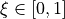
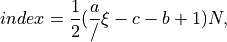
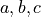

xopto.mcbase.mcpf.lut module¶
- class Lut(params: list, lut: numpy.ndarray)[source]¶
Bases:
xopto.mcbase.mcpf.pfbase.PfBaseLookup table-based scattering phase function constructor. Lookuptable is used for efficient computation of deflection angle cosines. A nonlinear transformation is used to compute linear lookup table (floating point) index from a uniform random number F:
index = 0.5*(params[0]/(F - params[2]) - params[1] + 1.0)*data.size
- Parameters
params (list, tuple or ndarray vector of 3 float) – Nonlinear index transformation function parameters provided as an array of size 3.
lut (np.ndarray vector) – Lookuptable data.
Note
The offset of the first lookup table entry is stored in the 45th user-defined scattering phase function parameter. The lookup table size is stored in the 4th user-defined scattering phase function parameter.
- static cl_declaration(mc: xopto.mcbase.mcobject.McObject) → str[source]¶
OpenCL declarations of the scattering phase function.
- static cl_implementation(mc: xopto.mcbase.mcobject.McObject) → str[source]¶
OpenCL implementation of the scattering phase function.
- static cl_options(mc: xopto.mcbase.mcobject.McObject) → List[Tuple[str, str]][source]¶
- cl_pack(mc: xopto.mcbase.mcobject.McObject, target: Optional[xopto.cl.cltypes.Structure] = None) → xopto.cl.cltypes.Structure[source]¶
Fills the an OpenCL cltypes.Structure (target) with the data required by the Monte Carlo simulator. See the
cl_type()method for a detailed list of fields.Note
Calls the
Mc.pack_fp_lut()method to pack the lookup table array data.- Parameters
mc (McObject) – Simulator instance.
target (cltypes.Structure) – Target OpenCL structure for packing.
- Returns
target – Target structure received as an input argument or a new instance of ClLut if the input argument target is None.
- Return type
- static cl_type(mc: xopto.mcbase.mcobject.McObject) → xopto.cl.cltypes.Structure[source]¶
Returns an OpenCL structure that can be passed to the Monte carlo simulator.
- Parameters
mc (McObject) – A Monte Carlo simulator instance.
- Returns
struct – A structure type that represents the scattering phase function in the Monte Carlo kernel.
The returned structure type implements the following fields:
- a: mc_fp_t
Parameter of the nonlinear lookup table index transformation.
- b: mc_fp_t
Parameter of the nonlinear lookup table index transformation.
- c: mc_fp_t
Parameter of the nonlinear lookup table index transformation.
- offset: mc_int_t
Location of the lookuptable as an offset from the start of the lookup table buffer.
- size: mc_int_t
Number of entries in the lookup table.
- Return type
Note
Note that this implementation of the lookup table uses the following nonlinear transformation to compute the lookup table index from a uniform random number .

where  are the parameters of the nonlinear index transformation and
 is the size of the lookup table
is the size of the lookup table
- property lut: numpy.ndarray¶
Lookup table object or None.
- property offset: int¶
Offset of the first element in the lookup table.
- property params: list¶
Lookup table index trasnformation parameters.
- property size: int¶
Lookup table size.
- class LutEx(pftype: xopto.mcbase.mcpf.pfbase.PfBase, pfargs: list, lutsize: int = 2000, **kwargs)[source]¶
Bases:
xopto.mcbase.mcpf.lut.LutCreates a Monte Carlo lookup table-based scattering phase function instance from a standard scattering phase function instance (
xopto.pf.PfBasesubclass).- Parameters
pftype (PfBase subclass or str) – Scattering phase function type. Use one defined in the
xopto.pfmodule.pfargs (list, tuple) – A list of scattering phase function parameters passed to the pftype.
lutsize (int) – Number of elements in the lookup table.
kwargs (dict) – Additional keyword arguments passed to the lut method of the scattering phase function as
pftype(*pfargs).lut(lutsize, **kwargs)
- property pf: xopto.mcbase.mcpf.pfbase.PfBase¶
Scattering phase function object that was used to create a lookup table.